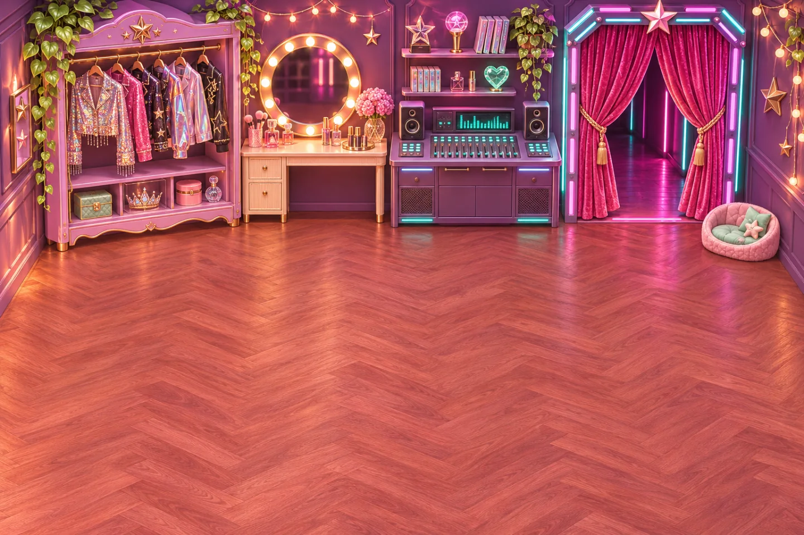

Bu sürümde Sofia ne oynayabilir?
Oyuna doğrudan kulisten girilir. Lisa ile başlar. Üstteki üye portresinden Jisoo, Jennie veya Rosé seçilebilir. Joystick ve yere dokunma aynı karakteri hareket ettirir. Üyenin prova dizisi, sahnedeki üç ışık renginin sırasını belirler. Ritim bölümünde karakter adım atar ve her başarılı dokunuş skor halkasını aydınlatır.
İlk mobil sürüm için kararımız TypeScript, Canvas 2D ve Web Audio. Kulis ve sahne çizimleri, dört yönlü yürüyüş görünümü ve özgün müzik telefonun tarayıcısında çalışır. Yayın GitHub Pages üzerinde herkese açık bir HTTPS bağlantısıdır. İlk dil Rusçadır. Türkçe tercihi, ilerleme ve kartlar o tarayıcıda saklanır.
Hongdae fotoğraf yürüyüşü. Gardıropta kıyafetini giy, kulis kapısına yürü ve Pixel ile dışarı çık. Plakçıya uğrarsan kabinde özel bir çerçeve açılır. Fotokabinde pozu, renkleri ve çerçeveyi seçip deklanşöre bas. Çektiğin görüntü, o anda giydiğin kıyafetle albüme basılır. Sonradan kıyafetini değiştirdiğinde eski karttaki poz ve kıyafet korunur.
Kuliste bir iş, sahnede bir sonuç
İlk oynanabilir bölüm 11–12 yaş için yaklaşık 3–5 dakikalık bir tur hedefler. Çocuk yürüyerek bir sorunu çözer, bir ekip üyesinden karşılık alır ve açılış ışığının sahnede çalıştığını görür. İlk turda dört üyeden biri seçilir. Kulis tek bir sürekli mekândır ve sahne kapısı final sekansına geçer.
- Kulise gir. Jisoo, Jennie, Rosé veya Lisa’yı seç. Zemine dokun, ekrandaki yön kolunu kullan ya da klavyede yön tuşlarını kullan. Ekrandaki tek görev satırı önce Pixel’e çağırır. Pixel’e dokunmak karakteri yanına götürür.
- İpucunu bul. Pixel’in bakışı gardıroba döner. Kutuların arasındaki alt rafı inceleyip pembe kulaklığı al. İsteğe bağlı “İpucu” hedefin yönünü söyler. “Odadaki yerler” listesindeki gardırop düğmesi aynı noktaya yürütür.
- Ekibe teslim et. Hazırlık masasına fiziksel olarak yaklaş ve kulaklığı ver. Ekip kısa bir teşekkür eder. Çantadaki kulaklık teslim edilir ve görev listesi güncellenir.
- Girişi hazırla. Aynı prova panelindeki iki çalışmayı istediğin sırada dene. Işıkta üç işareti tekrarla. Seste kısa çağrıyı üç görünür nota simgesiyle eşleştir. Diziyi yeniden göstermek ve denemek serbesttir. Her notanın biçimi ve sırası sessizde de görülebilir.
- Sahne kapısına yürü. Kapıda açılış işareti gelir. Perde açılır, kulis anısı albüme eklenir ve ana konser akışına geçilir. Oyuncu kuliste dolaşmaya devam edebilir veya hazırlığı başka bir üyeyle yeniden yapabilir.
Albümde katkı görünür. “İlk sahne çağrısı” kartında seçilen üyenin sahne portresi ve ona özgü bir cümle yer alır. Daha sonraki dinamik kartta prova ışığı görselin parçası olur. Katkı metni eylemi sahneye bağlar. “Pembe kulaklığı buldun. Ekip sahneye hazır çıktı.”
İkinci turda oda tanıdık kalır. Üye motivasyonu, kutu, iki kısa prova dizisi ve albüm görseli değişir. Geniş sürümde oda içindeki saklama noktası, çağrı dizisi ve ekip arkadaşının karşılığı tur başında belirlenebilir. Seçimler kayda alınırsa yenileme ve tekrar izleme aynı sonucu verir.
Bir cümle, bir sonraki adım
Pixel’in ipucu, ekip arkadaşının teşekkürü ve kapının açılması bölümün üç duygusal durağıdır. Hikâye bir sorunla başlar, çocuğa çözmek için zaman verir ve yaptığı yardımın sonucunu gösterir. İlk yönergede en fazla bir iş ve bir varış noktası kullanılır. Teknik terimler yerine çocuğun ekranda gördüğü eşyanın adı kullanılır.
- Görevin ilk adı
- “Pixel’e yaklaş ve onu sev.” «Подойди к Пикселю и погладь его.»
- Araştırma ipucu
- “Gardırobun alt rafında pembe kulaklığı ara.” «Поищи розовый наушник на нижней полке гардероба.»
- Denemeye dönüş
- “Sırayı baştan deneyebilirsin.” «Повтори порядок с начала.»
- Hatıra
- “İlk sahne çağrısı” «Первый вызов на сцену»
Jisoo açılış ışığına, Jennie ilk sese, Rosé grubun birlikte duyulmasına ve Lisa ilk sahne adımına odaklanır. Türkçe ve Rusça metinler aynı dil anahtarlarını paylaşır. Görev adı, erişilebilir kontrol adı, ipucu ve albüm açıklaması beraber çevrilir. Kiril satır kırımı ve Türkçenin karakterleri küçük ekranda kontrol edilir. Diller arasında geçiş aynı görev adımını ve seçimleri korur.
Görüntü, hareket ve ses birlikte okunur

Kulis ve sahne
2,5B bakışlı kuliste geniş bir orta yürüyüş alanı bırak. Gardırop, hazırlık masası, ışık ve ses köşeleri ile sahne kapısı siluet ve simgeleriyle okunur. Zemin, öndeki nesneler ve hareketli karakterler ayrı derinlik sıraları kullanır. Parlak ahşap zemine lila dolap, sıcak ışıklı hazırlık aynası, turkuaz konsol, koyu pembe perde ve Pixel’in nane yeşili yatağı yön verir.
Karakter hareketi
Dört üyenin her biri için üç görünüş yönü ve yön başına dört kare. Bir kare bekleme, üç kare yürüyüş. Pixel ayrı çizilir. Karakterin ayak noktası hareket ile resim katmanlarını hizalar. Sonraki hareketler kulak/kuyruk tepkisi, kulaklığı alma ve teslim etme, perde açılması ve sahnede üç aşamalı selamdır. Hareket azaltma açıkken durumlar sabit poz, simge ve kısa metinle aktarılır.
Özgün ses
Kuliste 110 BPM, dört ölçülük özgün bir prova motifi çalar. Üç notalı çağrıda aynı tını üç farklı perdede çalar. Alçak, orta ve yüksek sesler üç ayrı simgeyle eşleşir. Pixel’e iki yumuşak ton, masaya üç notalık karşılık, perdeye kısa yükseliş ve son akor. Kulis menüsündeki ses düğmesi müziği ve efektleri birlikte açıp kapatır. Ses ilk dokunuştan sonra açılır ve oyun arka plana geçtiğinde durur.
Final ve tekrar izleme
Geniş sürüm için 6–10 saniyelik canlı sekans. Perde açılır, oyuncunun hazırladığı ışıklar yanar ve seçilen üye selam verir. “Geç” ve “Yeniden izle” görünür. Üye ve ışık seçimi olay sırasıyla kaydedilir. Albüm açıldığında sahne karesi bu seçimlerden yeniden çizilir. Dört serbest takım vuruşu isteğe bağlı bis süslemesidir.
Mobil tarayıcı için üretim bütçesi
Aşağıdaki değerler ilk sahne için yaklaşık hedeflerdir. Ağ bütçeleri sıkıştırılmış aktarımı ifade eder. Sonuçlar cihaz ve koşumla birlikte kaydedilir.
- İlk oynanabilir yük · en çok 1 MB
- HTML, CSS ve JS için 180 KB, 1440 × 960 kulis görseli için 400 KB, seçilen karakter atlası için 160 KB, Pixel, eşya ve arayüz için 160 KB, diğer ilk istekler için 100 KB. Diğer üyelerin atlasları seçimle, sahne görselleri kapıya yaklaşınca yüklenir.
- Çizim ve sahne · aşamalı yük
- Kulis görseli 213 KiB olarak üretildi. Kulis WebP sınırı 400 KB, sonraki sahne ve perde katmanları toplam 350 KB, her üye için 512 × 480 atlas sınırı 160 KB. Gölge ve spot hareketleri yeniden kullanılabilir katmanlardır. 3B denemesinde bölge başına geometri ve sıkıştırılmış doku aktarımı toplam 750 KB, aynı bütçenin içinde en çok iki 1024 × 1024 doku hedeflenir.
- Ses · açılışta medya dosyası gerektirmeyen kısa sentez
- Kısa işaretler ve yaklaşık 8,7 saniyelik oda döngüsü Web Audio ile yerelde üretilir. Döngünün mono PCM örnekleri bellekte yaklaşık 770 KB tutar. Ses dosyası eklenen geniş sürümde ilk oda döngüsü en çok 120 KB, bütün efektler toplam 160 KB ve final sesi en çok 240 KB. Parçalar sahneye göre açılır.
- Video · açılışta 0 KB
- İlk final motor içinde oynar. İleride istenirse oyun içi 720p, 6–10 saniyelik, en çok 1 MB’lık isteğe bağlı bir klip hazırlanır. Poster karesi önce gelir. Sesli anlatım kullanılırsa metin karşılığı sunulur.
Bağlantıyla açılan oyun, ölçümle seçilen motor
- TypeScript, Canvas 2D ve HTML · bu bölüm
- Tarayıcıda tek arka plan, yönlere göre sprite, yürüme poligonu, engeller ve etkileşim bölgeleri. Küçük bir kamera karakteri takip eder. Oyun durumuna bağlı HTML kontrolleri görevleri, menüleri, klavye odağını ve ekran okuyucu adlarını taşır. Mevcut TypeScript oyununa uyduğu için ilk bölümde ayrıca bir motor indirilmez.
- Phaser · bölüm sayısı büyüdüğünde
- TypeScript ile Canvas/WebGL, sahne yönetimi, sprite ve animasyon desteği sunar. Birkaç odadan sonra özel motor kodu hızla büyürse aynı küçük bölümü Phaser ile ölç. Başlangıç boyutu, çizim süresi ve HTML erişim kontrolleri aynı örnek üzerinden değerlendirilir. Phaser belgeleri
- Unity Web · 3B sanat ve animasyon denemesi
- Unity sahne ve animasyon araçlarıyla bir modüler kulis kurulabilir. Seçilen Unity sürümünün tarayıcı desteğini kontrol et. Aynı sahnede WebAssembly indirme, ilk hareket, tarayıcı belleği, cihaz ısınması ve arka plandan dönüş ölçülür. Dokunma ve erişilebilir HTML katmanı ayrıca denenir. Unity Web tarayıcı desteği · Unity Web bellek yönetimi
- C++ ve WebAssembly · ölçülmüş bir darboğaz için
- Emscripten, C++ modülünü WebAssembly’ye derler. Belirli bir hesaplama bütçeyi sürekli aşarsa önce o işlev ve JS–Wasm veri aktarımı birlikte profillenir. Giriş, ses, erişilebilir UI, derleme boyutu ve tarayıcı bakımı ayrı iş kalemleridir. Emscripten belgeleri
Telefondan nasıl girilir?
Aileye Safari veya Chrome’da açılan doğrudan bir HTTPS bağlantısı verilir. QR aynı adresi açar. Aile sürümü hesap açmadan ve uygulama yüklemeden oynanacak şekilde hazırlanır. Temiz tarayıcı oturumunda giriş ve tamamlanmış tur doğrulanır. Oyun tercihleri, görev kontrol noktası ve albüm tarayıcıda saklanır. Paylaşılan veya sıfırlanan cihazda kayıt kaybını açıklayan kısa bir metin ve yerel kayıt sıfırlama seçeneği sonraki yayın kabulüne dahildir.
Dokunarak yürüme, yön kontrolü ve klavye aynı hedefi seçebilir. Görev satırındaki HTML düğmesi uygun hedefi bulur, oyuncuyu oraya götürür ve ilerlemeyi metinle bildirir. Temel düğme hedefi en az 44 × 44 CSS piksel. Simge, sayı ve metin renge eşlik eder. Odak görünür. Hareket azaltma, sessiz mod ve ekran döndürme turu aynı albüm ödülüne götürür. WCAG 2.2
Hongdae fotoğrafları, oyuncunun seçtiği çizimler ve kadraj kullanılarak telefonunda oluşturulur. Telefon kamerası, mikrofon, konum, açık sohbet ve oyun içi satın alma kullanılmaz. Dağıtım kapsamı genişlediğinde gerçek kişi, marka, görsel ve müzik kullanım hakları yayın öncesinde gözden geçirilir.
Çocuk ve cihaz kabulü
- İlk deneme gözlemi. İmkân olursa her dilde iki ayrı ilk deneme. İlk 30 saniyede, dışarıdan yönlendirme almadan, en az bir hareket ve Pixel görevini başlatma gözlenir. Kapanışta “Sahneye çıkmadan önce neye yardım ettin?” sorusuna kendi sözüyle eylem ve sonucunu bağlayabilmesi aranır.
- Otomasyon. WebKit iPhone 13 mini profili ve dokunmatik Chromium’da 320 CSS pikselden başlayarak dikey/yatay yerleşim. Türkçe ve Rusça, klavye, safe area, ekran kayması, hızlı tekrar, yanlış seçim, sekmeye dönme, sessiz ve azaltılmış hareket senaryoları. Tarayıcı konsol hatası, 4xx istek, başarısız varlık veya ikinci ödül kaydı olmamalı.
- Fiziksel cihaz. En az bir küçük ekranlı iPhone Safari ve bir orta sınıf Android Chrome ile tam tur. Model, işletim sistemi, tarayıcı, ekran yönü ve ağ profili kayda girer. Üç soğuk açılışın ortancası yavaş 4G profilinde ilk hareket için 3 saniye veya daha kısa, ilk aktarımda 1 MB bütçesi hedeflenir. 60 saniyelik aktif oyunda p95 kare aralığı en çok 32 ms. Dokunuş ile ilk görsel tepki için p95 en çok 100 ms hedeflenir.
- Ses ve askıya alma. Hoparlör ve sessizde aynı görev dizisi bitirilebilir. Ekran kilidinde ses durur. Geri dönüldüğünde yeni dokunuş sesi yeniden başlatır. Bluetooth gecikmesi ayrı ölçülür. Arka plan ve yeniden yükleme aynı kontrol noktasına döndürür.
Emülasyon çıktılarına tarayıcı profili, fiziksel koşulara cihaz adı yazılır. Çocuk gözlemi ve ağ performansı için ayrı kayıt tutulur. Bu sayfadaki eşikler üretim hedefidir.
Bir odadan turneye
- Şimdiki teslim · web bölümü
- Mevcut rol kartları, Seul ve Busan, gardırop, patili dostlar ve bis oyunu üzerinden açılan tek yürünebilir kulis. Dört üye, Pixel, gardırop, hazırlık masası, aynı panelde ışık ve ses çalışması, sahneye geçiş ve üyenin albüm portresi bu bölümün kapsamı. Oynanabilir kapsam ve açık testler yayın sırasında sürümle eşleştirilir.
- Sonraki hafta · gerçek cihaz ve çocuk denemesi
- 2–3 çalışma günü. Her iki dilde ilk turu, kayıt dönüşünü ve düşük bant genişliğini ölç. Yerleşim, sprite okunurluğu ve görev satırı çocukların ilk denemesine göre düzeltilir.
- İkinci adım · komşu odalar
- 1–2 hafta. Kulisle gardırop veya prova odasını birbirine bağla. Nari ve Hena’nın seçme sahnesi bir kısa yardım, bir diyalog ve bir albüm anısıyla ayrı bölüm olur. Odalar aynı görev ve kayıt şemasını kullanır. Her yeni alan için ilk yük ve düşük cihaz performansı yeniden ölçülür.
- Üçüncü adım · animasyon ve daha büyük dünya
- 2–4 hafta. Bir örnek odada katmanlı 2,5B ve modüler düşük poligonlu 3B seçeneklerini aynı cihazlarda karşılaştır. Bir üye için giyilebilir katman, kısa sahne koreografisi, tekrar izleme ve ulaşım bağlantısını tamamla. Sonuç iyi olursa yeni şehir sekansları, kamera açıları ve isteğe bağlı video ele alınır.
Süreler küçük ekip için iş tahminidir. İleri aşamalar gerçek cihaz ve içerik üretim sonuçlarına göre planlanır.
Altı disiplinin ortak kararı
Dünya ve motor
Tek 2,5B kulis, yürüme poligonu, engel ve etkileşim bölgeleri. Dokunulan nesneye veya görev düğmesindeki hedefe karakter gerçekten yürür. Sonraki odalar aynı koordinat ve hareket sistemini taşır.
Oynanış
Pixel’in alt raf ipucu, pembe kulaklık, hazırlık masası, aynı panelde iki kısa prova ve sahne kapısı birbirine bağlandı. Dört üyenin prova dizileri değişerek aynı odada ikinci tur açar.
Sanat ve hareket
Tek okunaklı oda perspektifi, üç görünüş sıralı üye atlası ve ayrı Pixel çizimi seçildi. Sonraki sahne karesi, üyenin atlasını ve oyuncunun prova ışığını birleştirir.
Müzik ve ses
Görsel üçlü ışık dizisi ile alçak, orta ve yüksek notalar eşleşir. Özgün müzik temposu oyun girişinin süresini belirlemez. Uzun final vuruşları ileride serbest bir süsleme olarak denenebilir.
Kalite ve erişim
İlk 30 saniyeyi gözlem, iki mobil tarayıcıyı otomasyon, fiziksel performansı cihaz koşusu ölçer. Sessiz mod ve azaltılmış hareket aynı ödülle kapanır.
Hikâye ve çocuk deneyimi
Her anlatı satırı bir sonraki eylemi gösterir. Yanlış seçim yumuşak bir yeni denemeye açılır. Albüm, çocuğun ne yaptığını ve ekibin bundan ne kazandığını birlikte anlatır.